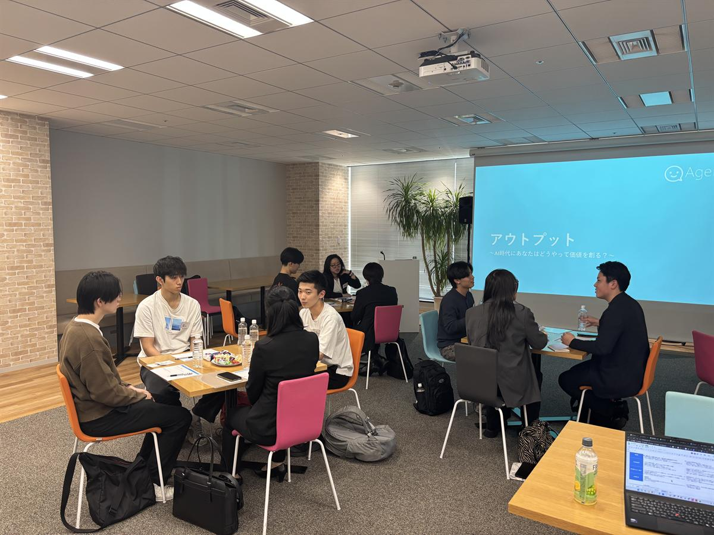
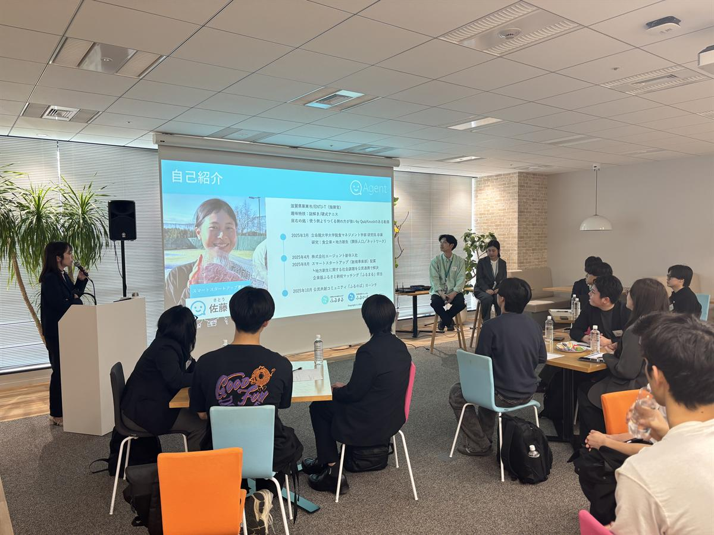

AI時代に考える、
納得したキャリアを歩むための
本気の少人数座談会。
AIに聞いても出てこない「自分がなぜそこで働くのか」。
内定はあるけど、なんとなく腹落ちしてない。
そんな悩めるあなたと、上場企業の執行役員が一緒に
「自分の判断軸」をつくる2時間。
※ 定員30名に達し次第、受付終了します
AIに聞いても出てこない「自分がなぜそこで働くのか」。
内定はあるけど、なんとなく腹落ちしてない。
そんな悩めるあなたと、上場企業の執行役員が一緒に
「自分の判断軸」をつくる2時間。
※ 定員30名に達し次第、受付終了します
RELIABILITY
東京証券取引所
TOKYO PRO Market
証券コード 7098／
情報開示と
コンプライアンスを徹底
2030年までの
事業創出目標
20代から社内起業・
事業責任者に
挑戦できる環境
人材×IT×事業創造の
歴史
カンボジア小学校建設
から続く
ソーシャルベンチャー
PAST EVENTS
少人数だからこそ生まれる、
本音で話せる空気感をお届けします。



WHAT YOU GET
こんな悩みに
就活軸はあるけど「これで本当にいいのか」と不安が残る27卒へ。自分の価値観を「他者の言葉」で言語化するワークを通じて、これからの社会人生活に向けた「自分の軸」を整えていきます。
こんな悩みに
「最適解」はAIが出してくれる。だからこそ、これからの社会で問われるのは「自分はどんな価値を創るのか」「どう生きるのか」。複数社の役員を歴任した執行役員と一緒に、AI時代に通用する仕事の在り方・生き方の軸を考える時間に。
こんな悩みに
選考目的ではない、本音で話せる場。「第3者視点で壁打ち」するだけでも、自分の判断軸の輪郭がはっきりします。残りの就活期間を、納得して進む時間に変えるための2時間を。
SPEAKERS

Masamichi Otsuka
University of London SOAS College卒業後、ロンドンより帰国。SE・事業開発・マーケティングを経て30歳で独立。複数社の執行役員・取締役を歴任後、2023年12月に株式会社エージェント執行役員に就任。
Akane Ichizono
マレーシアの大学を卒業後、2023年4月に株式会社エージェントへ新卒入社。キャリアアドバイザーを経験後、人材開発本部にて新卒採用を担当。300事業を共に創る仲間を採用するべく、学生に伴走中。
FOR YOU
条件で選べないから悩んでいる。納得して進む選択肢を、一緒に作りましょう。
「やりたいことが分からない」のではなく、まだ言語化されていないだけ。フレームワークで2時間あれば言葉になります。
説明会の質疑応答ではなく、本音で話せる距離感。少人数だからできる時間です。
選ばれた30名。懇親会では参加者同士の連絡先交換も可能です。
VOICES
漠然としていた就活やキャリアへの不安を、言語化する大きな助けになった時間でした。自分の中でモヤモヤしていたものが少しずつ整理できたと感じています。
参加学生
AI時代の中で、私たち学生がこれから果たしていく役割について、じっくり考えるきっかけになりました。普段の就活では出会えない問いに向き合える時間でした。
参加学生
もっと詳しく、長くお話を聞きたいと思える時間でした。より多くの人が参加して、就職することの意味を学んでほしいと思える内容でした。
参加学生
FAQ
OVERVIEW
※ 定員30名に達し次第、受付を終了します